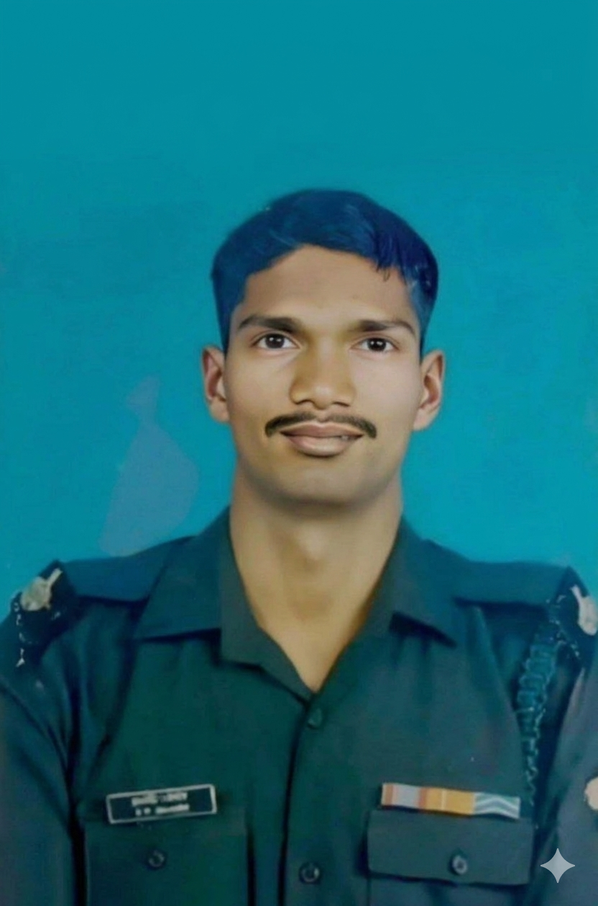
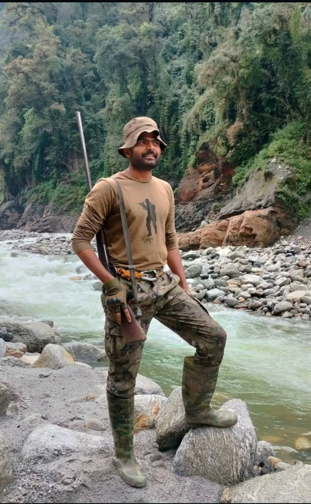
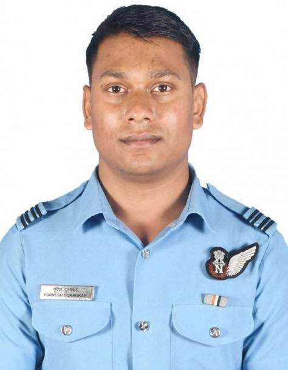

Shaurya Foundation honors soldiers who sacrificed their lives protecting India. The courage and sacrifice of these brave individuals safeguard the freedom and security of millions of citizens.
Our organization is committed to ensuring that the families of fallen soldiers receive continued support, respect, and opportunities to rebuild their lives. We work closely with communities and volunteers across India to make a meaningful difference.
Providing direct assistance to martyr families.
Emergency funds, financial grants, and long-term economic support to help families maintain stability after their loss.
Supporting education of children of martyrs.
Scholarships, school supplies, mentorship programs, and career guidance for long-term development.
Helping families rebuild lives.
Emotional support programs, job guidance, and community outreach initiatives.
Shaurya works closely with the families of fallen soldiers to ensure they receive practical help, emotional support, and long-term opportunities.
Emergency support after tragedy.
Shaurya provides emergency funds and assistance to help families manage urgent financial needs.
Supporting children's education.
We sponsor school fees, books, and scholarships to ensure children of martyrs have access to quality education.
Helping families build stability.
Career counseling and job placement programs help family members develop sustainable livelihoods.
Building strong support systems.
Families become part of a community that shares support, guidance, and encouragement for the future.



Families Supported
Children Educated
States Reached
Your support helps families of fallen soldiers rebuild their future.